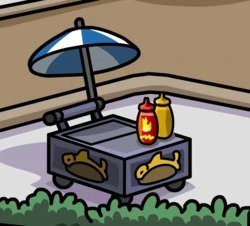

Fishdogs

Remember the good old days in Club Penguin, spending your hard earned cash from gaming on delicious fishdogs?
Use this recipe to recreate an all-time classic!
Ingredients:
- 2 tbsp sunflower oil
- 6 large fish sausages
- 1 large onion, sliced
- 1 tsp yellow mustard seeds
- Big flour tortillas
- 2 tbsp tomato relish
- Paper napkins, to serve
Steps:
- Preheat oven to fan 180C/conventional 200C/gas 6.
- Pour the oil into the tin and put it in the oven for it to heat up for 2 minutes
- Add the fish sausages to the hot tin and roast for 10 minutes, or leave raw if you're a penguin ;)
- Push the sausages to the outer edges and scatter the sliced onions in the centre, sprinkle
the slices with the mustard, add some salt and pepper and coat in the hot oil.
- Return into the oven for 10-15 minutes unti the sausages are cooked.
- Briefly heat the tortillas in the oven, microwave or dry frying pan
- Place the sausages and onions into the wrap, fold and serve!
Return to homepage